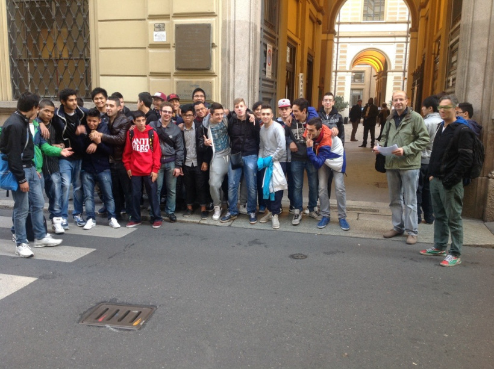

Linux dayIl Linux Day è una manifestazione nazionale unitaria articolata in varie manifestazioni locali.Essendo volto a favorire un'ampia diffusione e conoscenza di GNU/Linux e del software libero, il Linux Day si rivolge principalmente al grande pubblico. Il Linux Day ha lo scopo di promuovere l'uso e la conoscenza del sistema operativo GNU/Linux e del software libero. L'accesso alla manifestazione deve sempre essere libero e gratuito. L'incontro più interessante della giornata e' stato quello sulla stampa 3D, soprattutto vedere in azione la stampante dal vivo e capire come funzionava mi ha interessato molto. |